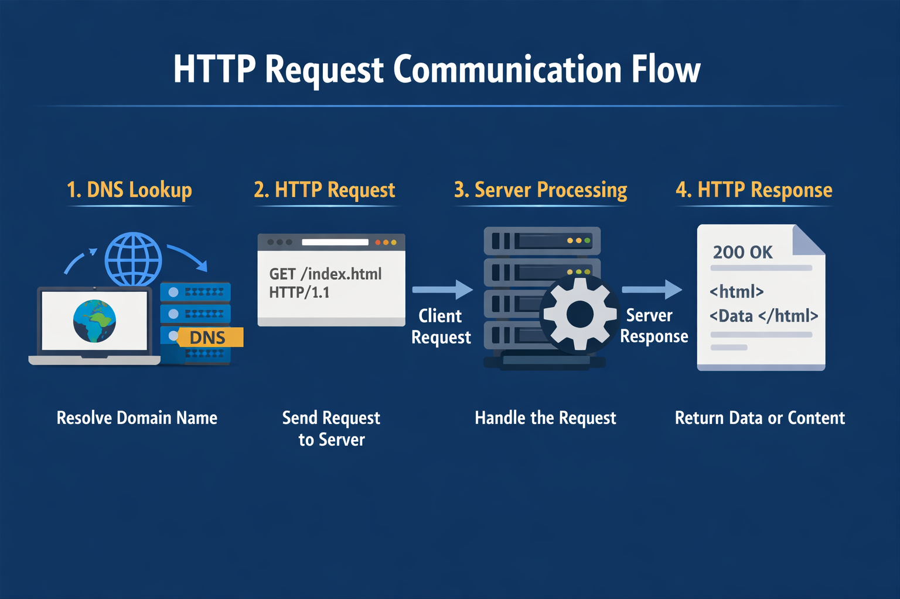
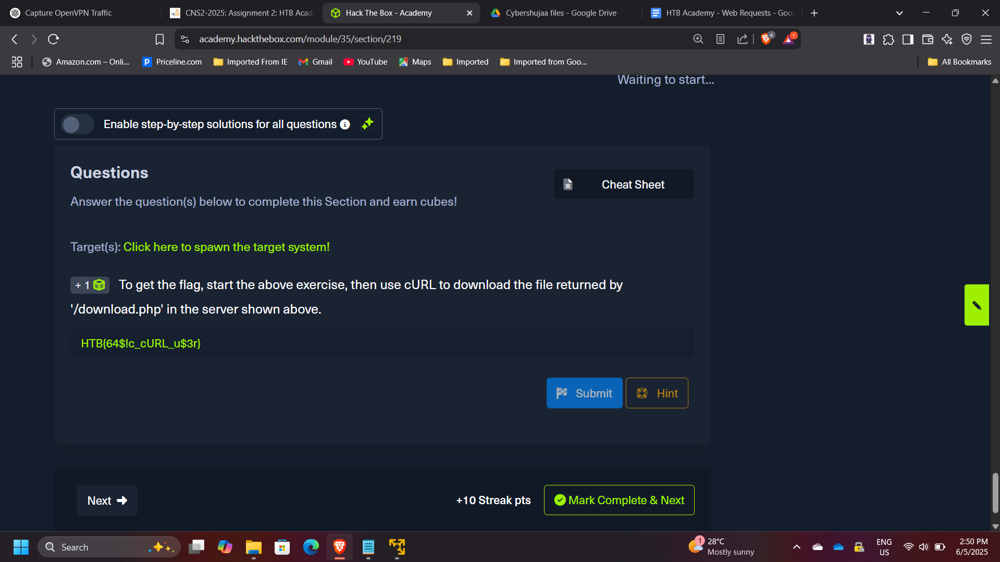
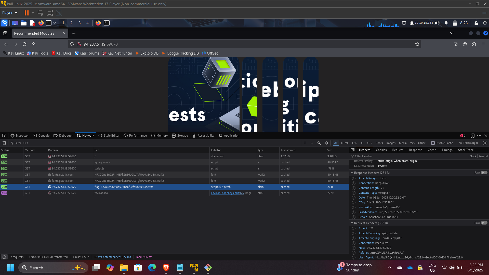
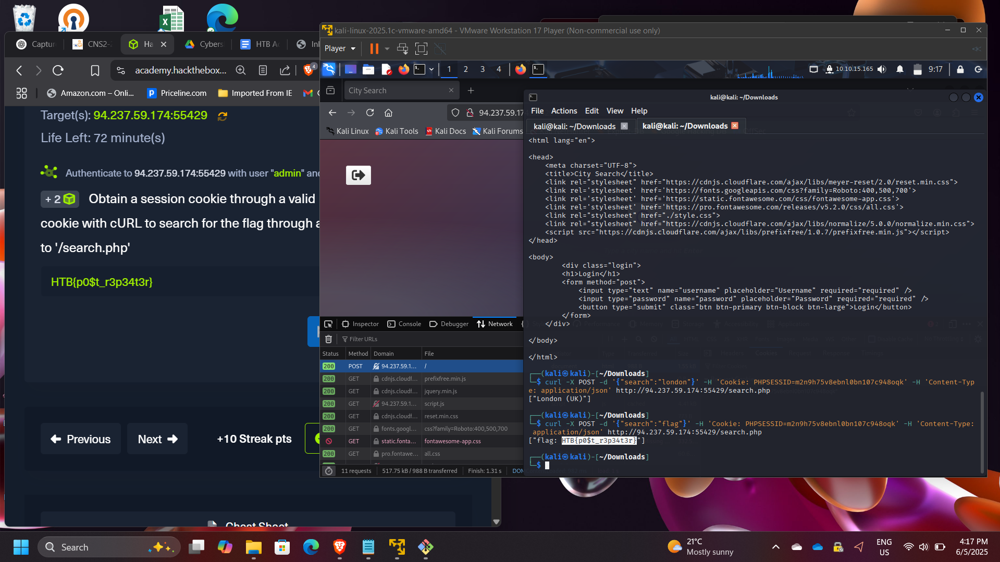

Web Application Traffic Analysis & HTTP Request Manipulation
Project: Web Application Traffic Analysis & HTTP Request Manipulation
Course: Cloud and Network Security
Platform: HackTheBox Academy
Role: Web Application Security Analyst
Focus: HTTP Protocol Analysis, Request Manipulation, API Interaction
Executive Summary
This project explores the fundamentals of web communication by analyzing and manipulating HTTP requests using browser developer tools and command-line utilities. Through practical exercises on HackTheBox Academy, I examined how web applications process requests and responses, how HTTP headers control server behavior, and how APIs expose functionality through HTTP endpoints.
Using tools such as cURL and browser network monitoring, I demonstrated how HTTP methods, headers, cookies, and request payloads can be modified to interact with server resources. The lab also included performing GET, POST, and CRUD API operations, highlighting how web applications expose functionality through structured HTTP communication.
Understanding these mechanisms is essential for both web application development and security testing, as it enables analysts to detect vulnerabilities, test APIs, and automate interactions with web services.
Web Request Communication Flow
A typical HTTP interaction follows these steps:
- Client resolves a domain using DNS.
- Browser sends an HTTP request to the web server.
- The server processes the request.
- The server returns an HTTP response containing data or resources.

Part 1: HyperText Transfer Protocol (HTTP)
HTTP is an application-layer protocol responsible for transmitting data between clients and servers.
In this exercise, the objective was to retrieve a hidden resource using cURL.
Example command used:
curl http://target-server/download.php
This command allowed direct retrieval of the resource returned by the server endpoint.
Flag retrieved: HTB{64$!c_cURL_u$3r}

Part 2: HTTP Requests and Responses
HTTP communication consists of two primary components:
- Request
- Response
Using browser developer tools, I intercepted the request sent by the browser and identified the HTTP method used.
HTTP Method Observed: GET
By inspecting the response headers returned by the server, I identified the version of the Apache web server running.
Server version identified: 2.4.41

Part 3: HTTP Headers Analysis
HTTP headers contain metadata describing how requests and responses should be handled by clients and servers.
Using the Network tab in browser developer tools, I monitored the requests generated by the webpage and identified the request responsible for retrieving the flag.
Flag discovered through request inspection: hTB{p493_r3qu3$t$_m0n!t0r}

Part 4: GET Request Manipulation
In this stage, the application appeared to return incorrect search results. By inspecting the request generated by the browser, I identified the query parameter used for searching.
I then reproduced the request using cURL and manually modified the parameter.
Example command:
curl http://target-server/search.php?query=flag
Flag retrieved: HTB{curl_g3773r}

Part 5: POST Request Manipulation
In this exercise, the objective was to perform a search operation through a POST request.
Steps performed:
- Logged into the application to obtain a session cookie
- Captured the cookie from browser developer tools
- Used the cookie in a cURL POST request
- Submitted a JSON payload to the API endpoint
Example command:
curl -X POST http://target-server/search.php \
-H "Cookie: session=XXXX" \
-H "Content-Type: application/json" \
-d '{"search":"flag"}'
Flag retrieved: HTB{p0$t_r3p34t3r}

Part 6: CRUD API Manipulation
The final challenge involved interacting with a web API that supports CRUD operations:
- Create
- Read
- Update
- Delete
The objective was to manipulate API data by performing the following steps:
- Update a city name to “flag”
- Delete an existing city
- Search for the newly created entry
After completing the API operations, the application returned the final flag.
Flag retrieved: HTB{crud_4p!_m4n!pul4t0r}

Security Concepts Demonstrated
This project demonstrates several important web security concepts:
- HTTP request and response analysis
- Web traffic monitoring
- Parameter manipulation
- API interaction testing
- Session cookie usage
- Browser developer tools for security analysis
- Command-line automation using cURL
These techniques are commonly used during web penetration testing and API security assessments.
Enterprise Relevance
Modern applications rely heavily on APIs and HTTP-based communication. Security professionals must understand how these requests operate in order to detect vulnerabilities such as:
- Broken authentication
- Parameter tampering
- API misuse
- Session hijacking
- Information disclosure through headers
Analyzing HTTP traffic and manipulating requests helps security teams identify weaknesses before attackers exploit them.
Conclusion
This project provided hands-on experience analyzing and manipulating HTTP requests through multiple techniques, including browser developer tools and command-line utilities such as cURL. By exploring GET and POST methods, HTTP headers, cookies, and API interactions, I gained deeper insight into how web applications communicate with servers.
The exercise strengthened my understanding of web application behavior, API communication, and HTTP traffic analysis, all of which are critical skills for web security testing and vulnerability assessment.